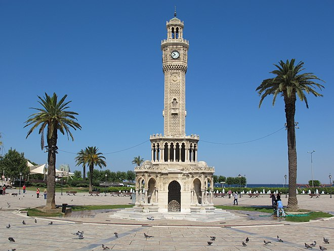
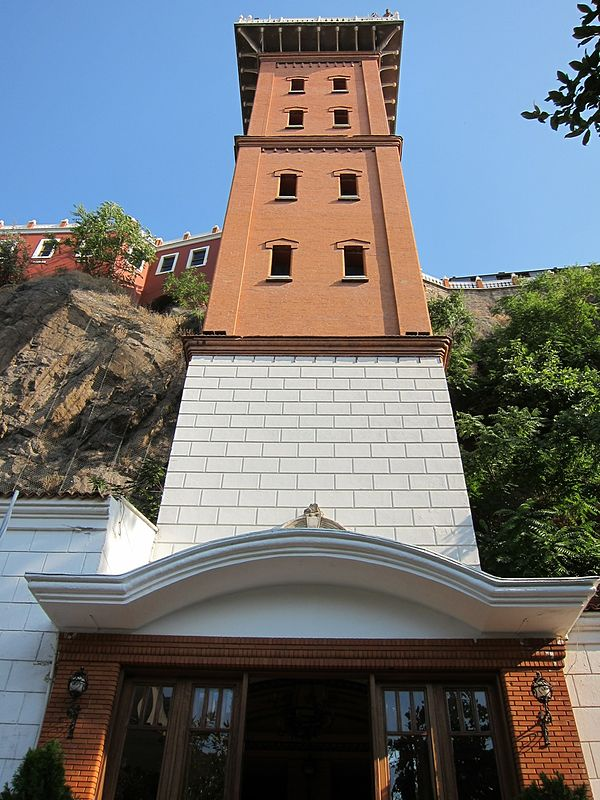
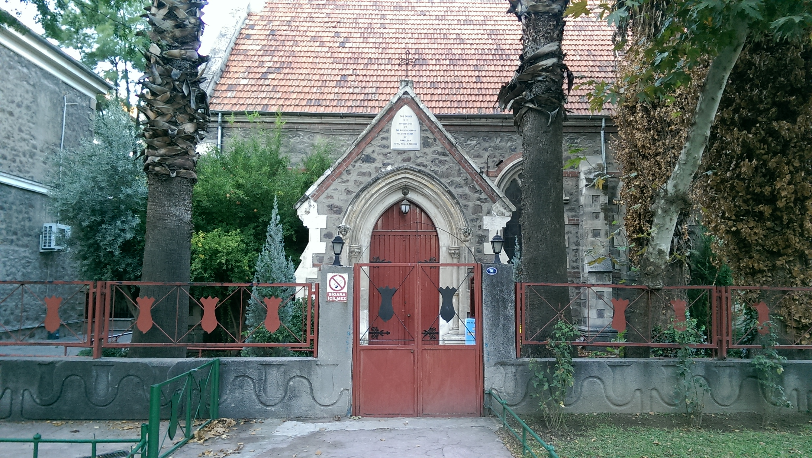

 Izmir Clock Tower is a historic clock tower located at the Konak Square in the Konak district of İzmir.
 Asansör is a historical building in İzmir, within the boundaries of the metropolitan district of Konak.
 Saint Polycarp Church is one of the main church in İzmir.